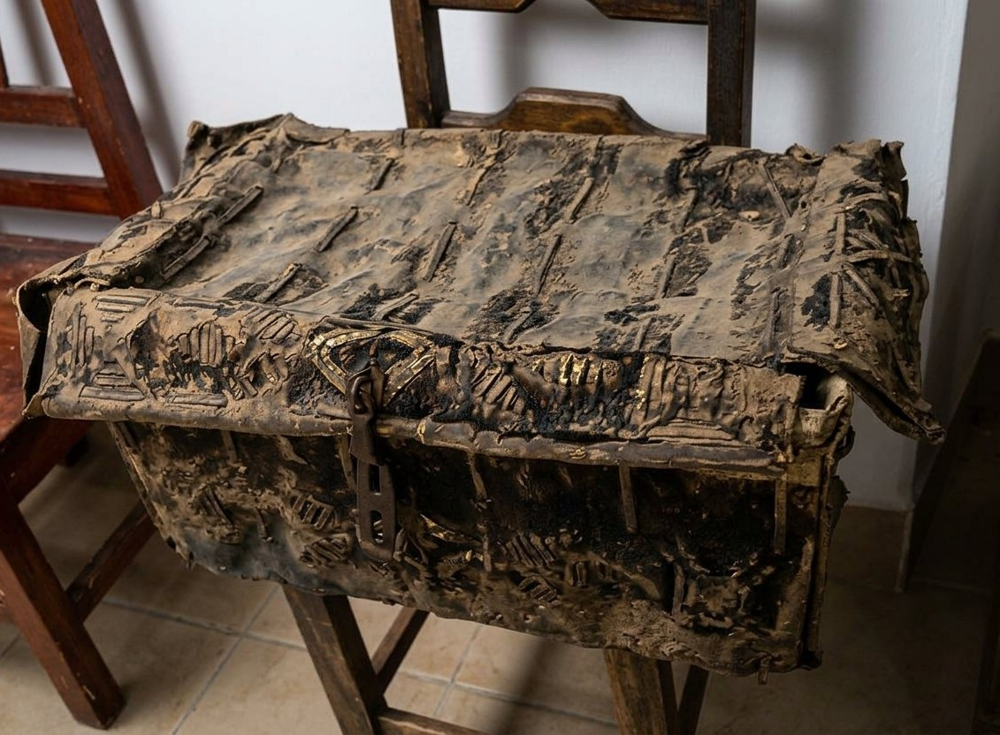
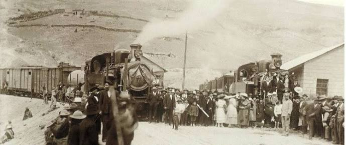

Casa Patiño
Vista de la construcción histórica vinculada a la presencia de Simón I. Patiño en Uncía.
La presente bibliografía reúne información histórica relacionada con Simón I. Patiño, el desarrollo de la minería del estaño en Bolivia, la ciudad de Uncía y la importancia histórica de la Casa Patiño. El objetivo es complementar el recorrido digital presentado en este proyecto con información que permita comprender el contexto económico, social y cultural en el que se desarrollaron estos acontecimientos.
Simón Iturri Patiño nació el 1 de junio de 1860 en el departamento de Cochabamba. Durante su juventud se trasladó a Oruro, donde entró en contacto con el ambiente comercial y minero de la época. Su trayectoria empresarial estuvo estrechamente relacionada con la expansión de la minería del estaño, especialmente en la región de Uncía y Llallagua.
A través de las diferentes fuentes consultadas es posible observar que la historia de Patiño no puede separarse de la transformación económica de Bolivia durante las primeras décadas del siglo XX. La explotación minera generó importantes actividades comerciales, infraestructura, transporte y relaciones laborales que transformaron profundamente las regiones mineras del país.

Retrato de Simón I. Patiño, empresario boliviano vinculado al desarrollo de la minería del estaño.
La historia de Simón I. Patiño está vinculada a uno de los periodos de mayor transformación de la minería boliviana. Después de trasladarse a Oruro, comenzó a desarrollar actividades comerciales y posteriormente se incorporó al sector minero. Su experiencia permitió que conociera directamente las características de la explotación minera y las posibilidades económicas del estaño.
Uno de los momentos fundamentales de su trayectoria fue el desarrollo de la mina La Salvadora, ubicada en la región de Uncía. La explotación de importantes yacimientos de estaño permitió que sus actividades empresariales crecieran rápidamente. La riqueza generada por estas operaciones fue posteriormente utilizada para ampliar sus actividades dentro y fuera de Bolivia.
Patiño también buscó controlar diferentes etapas relacionadas con la producción y comercialización del estaño. Su actividad empresarial llegó a incluir inversiones en empresas de transporte, instituciones financieras y fundiciones extranjeras. De esta manera, su empresa adquirió una dimensión internacional que convirtió a Patiño en una de las figuras más conocidas de la industria del estaño de su época.
Su trayectoria también estuvo relacionada con la creación de instituciones educativas y culturales. En 1931 creó la Fundación Universitaria Simón I. Patiño, orientada inicialmente a apoyar la formación de universitarios y posteriormente ampliada hacia diferentes áreas de educación, investigación y cultura.
Uncía ocupa un lugar importante dentro de la historia minera boliviana. Durante las primeras décadas del siglo XX, la región se convirtió en uno de los principales espacios relacionados con la explotación del estaño. El crecimiento de la actividad minera produjo también un crecimiento de la población y de las actividades comerciales.
La presencia de empresas mineras transformó la organización de la región. Alrededor de las minas se desarrollaron viviendas, establecimientos comerciales, servicios, infraestructura y medios de transporte destinados a facilitar la explotación y exportación del mineral.
La historia social de Uncía también estuvo marcada por las relaciones entre empresas mineras y trabajadores. El periodo de expansión minera estuvo acompañado por conflictos laborales y acontecimientos que posteriormente adquirieron importancia dentro de la historia del movimiento obrero boliviano. La Masacre de Uncía de 1923 constituye uno de los acontecimientos más estudiados de este periodo.

La región de Uncía estuvo estrechamente relacionada con la expansión de la minería del estaño durante el siglo XX.
El estaño adquirió una importancia económica cada vez mayor durante la transición entre los siglos XIX y XX. El crecimiento de la industria internacional aumentó la demanda del mineral, utilizado en diferentes procesos industriales, entre ellos la fabricación de hojalata.
Bolivia contaba con importantes yacimientos de estaño en su territorio. La explotación de estos recursos convirtió a la minería en uno de los principales sectores de la economía nacional durante buena parte de la primera mitad del siglo XX.
Dentro de este contexto, las actividades de Patiño crecieron desde la explotación de sus propiedades mineras hasta la participación en diferentes etapas de la cadena productiva. La integración de actividades mineras, transporte, comercialización y fundición permitió ampliar considerablemente el alcance de sus empresas.
La Casa Patiño constituye uno de los elementos arquitectónicos relacionados con la presencia de Simón I. Patiño en la región de Uncía. La construcción se encuentra en la zona de Miraflores, al oeste de la ciudad de Uncía, en el departamento de Potosí.
Más allá de sus características arquitectónicas, la casa permite aproximarse a la dimensión cotidiana y familiar de una época marcada por el crecimiento de la actividad minera. Sus espacios, objetos y elementos decorativos pueden ser interpretados como parte del patrimonio relacionado con la historia económica y social de la región.
La conservación de este tipo de edificaciones resulta importante porque los edificios históricos permiten relacionar los acontecimientos documentados en libros y archivos con espacios físicos concretos. En este sentido, la Casa Patiño forma parte de la memoria histórica de Uncía y del patrimonio asociado a la época minera.
Vista de la construcción histórica vinculada a la presencia de Simón I. Patiño en Uncía.

Los espacios interiores permiten apreciar parte de la arquitectura y elementos asociados a la época.
Los objetos históricos tienen un valor especial porque permiten comprender cómo era la vida cotidiana en una determinada época. Muebles, teléfonos, vajillas, cuadros, cofres, documentos y otros elementos pueden complementar la información obtenida mediante fuentes escritas.
En el caso de la Casa Patiño, la observación de estos elementos permite construir una experiencia más cercana al espacio histórico. Por esta razón, el presente proyecto incorpora una representación digital de diferentes objetos relacionados con el recorrido de la casa.
Elemento asociado a la comunicación y a la vida cotidiana de una residencia de la época.
Objeto relacionado con el entretenimiento y la vida doméstica.

Objeto representativo del mobiliario y almacenamiento de una residencia histórica.
El crecimiento de la minería hizo necesario mejorar los medios de transporte disponibles para trasladar minerales, maquinaria y diferentes productos. En este contexto, el ferrocarril adquirió una importancia fundamental para conectar las zonas mineras con otros puntos del país.
Uno de los proyectos relacionados con la actividad empresarial de Patiño fue el ferrocarril Machacamarca-Uncía. La conexión ferroviaria permitió mejorar el transporte entre la región minera y las rutas que comunicaban con otros centros económicos. Fuentes históricas señalan que Patiño había solicitado la concesión para construir esta vía y que posteriormente el ferrocarril se convirtió en una infraestructura importante para la actividad minera.

El transporte ferroviario fue fundamental para conectar las regiones mineras con las rutas comerciales.
El patrimonio histórico no está formado únicamente por monumentos famosos. También incluye edificios, objetos, fotografías, documentos y espacios que permiten conservar la memoria de una comunidad.
La conservación de lugares relacionados con la historia minera permite que las nuevas generaciones conozcan cómo se desarrollaron determinadas actividades económicas y cómo estas transformaron ciudades y comunidades. En este sentido, la documentación fotográfica y digital puede convertirse en una herramienta para preservar información sobre lugares que pueden sufrir deterioro con el paso del tiempo.
Las fotografías históricas también cumplen una función importante. Existen proyectos que han reunido imágenes relacionadas con Simón I. Patiño, la actividad minera, los trabajadores, las familias y los diferentes espacios vinculados a su trayectoria. La exposición “Fotografías para la historia, Simón I. Patiño: estaño y vida cotidiana 1900-1930”, por ejemplo, reunió material fotográfico dedicado a diferentes aspectos de este periodo.
El estudio de la Casa Patiño permite acercarse a un periodo fundamental de la historia económica y social de Bolivia. La expansión de la minería del estaño transformó regiones como Uncía y generó nuevas formas de organización empresarial, transporte, comercio y trabajo.
Simón I. Patiño representa una de las figuras centrales de este proceso. Su trayectoria pasó de las actividades mineras en Bolivia a la construcción de una estructura empresarial con conexiones internacionales. Al mismo tiempo, su historia está relacionada con instituciones educativas y culturales que continuaron desarrollando actividades después de su fallecimiento.
Por ello, conservar y difundir información sobre la Casa Patiño y sobre la historia minera de Uncía contribuye a mantener presente una parte importante de la memoria histórica del Norte de Potosí. La representación digital desarrollada en este proyecto busca precisamente acercar este patrimonio a los visitantes mediante un recorrido interactivo.
Información institucional y biográfica sobre Simón I. Patiño, su trayectoria empresarial y la creación de la Fundación.
Material relacionado con la historia de la minería, Uncía, Llallagua y las actividades empresariales de Patiño.
Investigaciones y artículos dedicados a la minería del estaño, la historia de Uncía y el patrimonio relacionado con Simón I. Patiño.
Fotografías históricas y actuales utilizadas como apoyo visual para comprender los espacios y acontecimientos relacionados con esta historia.